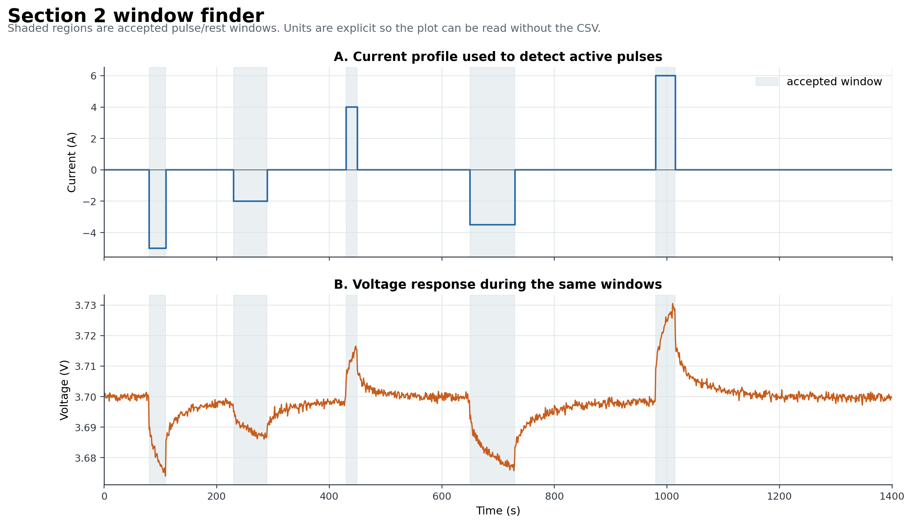
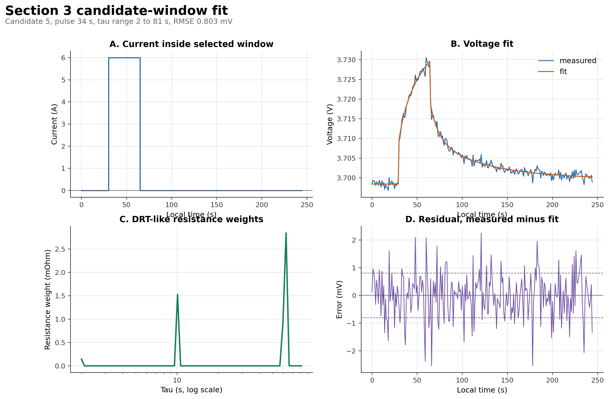
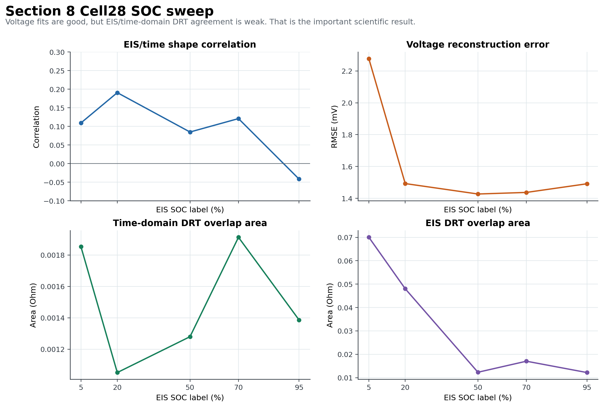
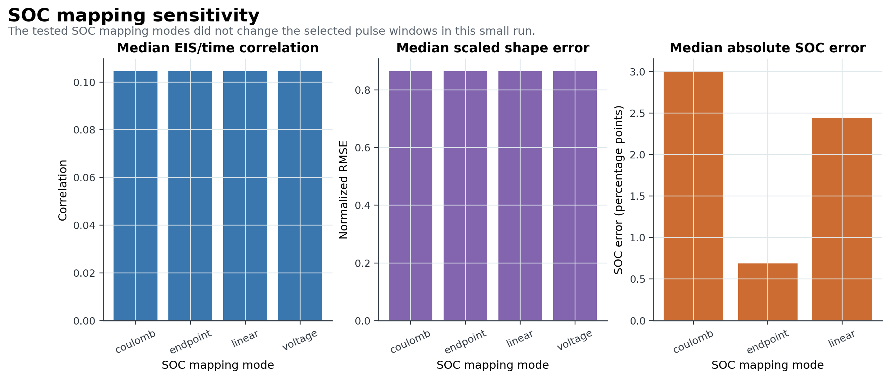

Mini Presentation: Key Plots
Time-Series DRT Pipeline, professor handoff, 2026-06-15
Slide 1: Results
- The plots show synthetic recovery, window selection, selected-window fit, SOC sweep, validation diagnostics, SOC alignment, batch behavior, sensitivity, and model-rule output.
- The visual story is consistent with the reports: voltage fits are decent, EIS shape agreement is weak.
- Each major PNG has a sidecar explanation file.
Slide 2: Achievements
- Plots were regenerated from saved CSV and JSON outputs.
- The package avoids relying on screenshots or manual chart edits.
- The visual set makes the weak results easier to see, not easier to hide.
PLOT_GUIDE.md explains what each plot shows and what not to overclaim.
 Synthetic sanity check.
Synthetic sanity check.

Window finder output.

Selected pulse fit and DRT-like curve.

Cell28 SOC sweep.
 Validation diagnostics.
Validation diagnostics.
 SOC alignment check.
SOC alignment check.
 DIB batch summary.
DIB batch summary.

SOC mapping sensitivity.
 Model sensitivity.
Model sensitivity.
 Pre-declared model rule.
Pre-declared model rule.
Slide 3: Open Issues
- Plots cannot fix weak validation.
- Raw DIB files were not present for every regeneration path, so some plots were rebuilt from exported result tables.
- The figures still depend on the correctness of the earlier window, SOC, and model assumptions.
Slide 4: Roadmap
- Add plots for professor-confirmed validation cases once available.
- Keep every plot tied to a CSV or JSON source.
- Add before-and-after plots only when a new rule is locked before EIS scoring.
- Use plots to expose failure modes, not to decorate the package.